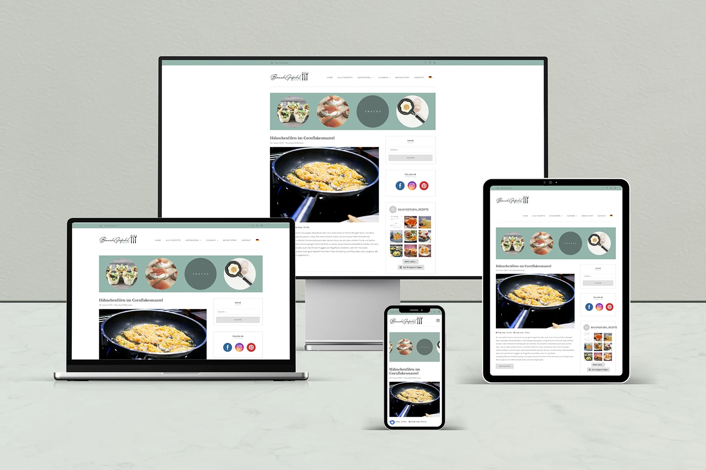
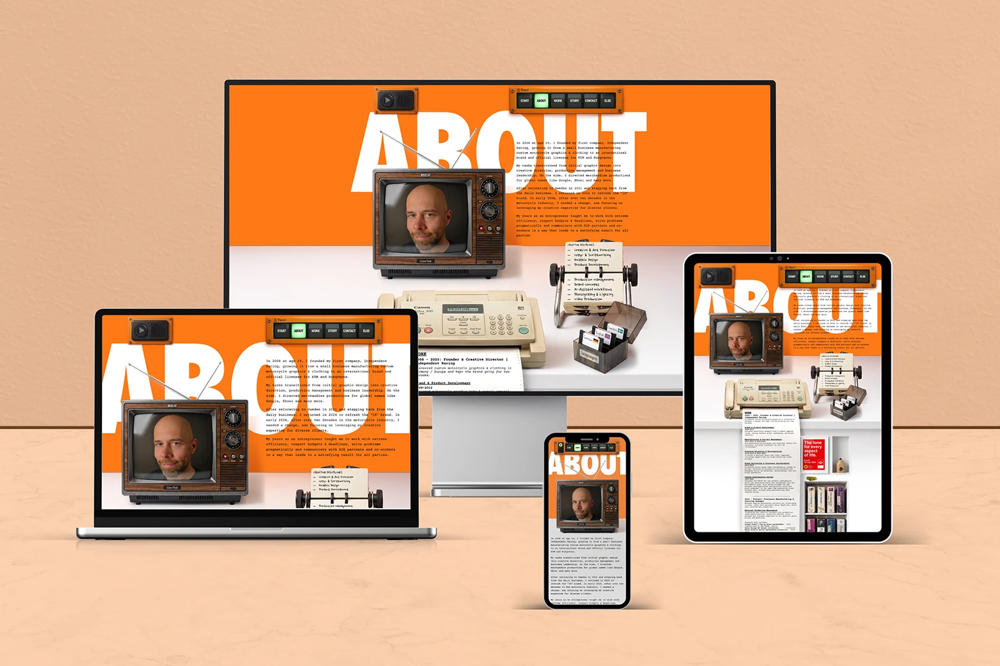
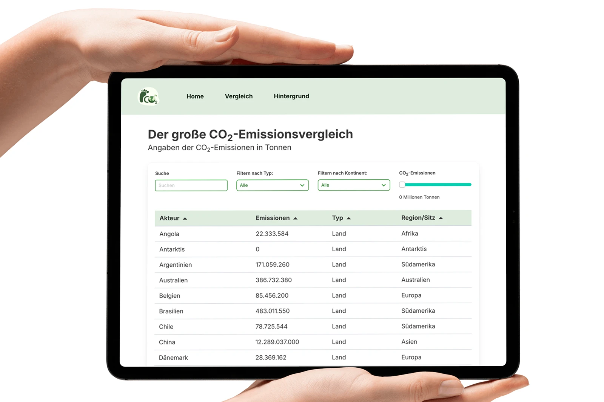
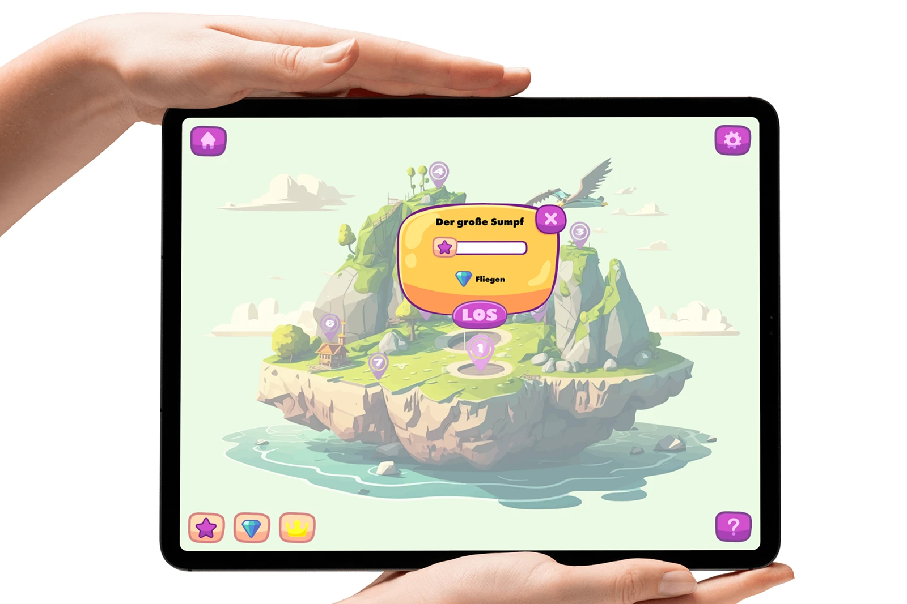
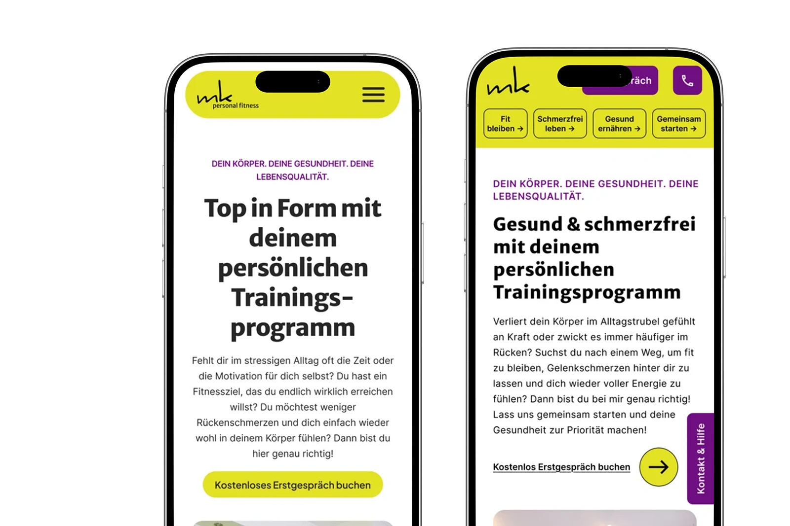

Meine Webdesign-Projekte & Studienarbeiten
Praxisnahe E-Commerce-Lösungen, individuelle Websites und interaktive UI/UX-Konzepte
Ein Einblick in meine Arbeit als Webdesignerin sowie in praxisorientierte Projekte aus meinem Medieninformatik-Studium. Hier verbinde ich benutzerzentriertes Design, saubere Informationsarchitekturen und funktionale Web-Technologien.
Zu den Kundenprojekten
Zu den Studienprojekten
Kunden- & Praxisprojekte
-
 E-Commerce & Webdesign
E-Commerce & Webdesign
Independent Racing - Online-Shop Relaunch
Ganzheitlicher Shop-Relaunch für individuelles Motocross- und Supermoto-Dekor auf WordPress- und WooCommerce-Basis. Kernstück ist ein nahtlos integrierter Live-Konfigurator für Kunden-Anpassungen.
- WooCommerce
- Elementor
- Live-Konfigurator
Zur Website
-
 B2B Webdesign
B2B Webdesign
Netzsystem Petzold – Corporate Website
Neugestaltung des Webauftritts für ein B2B-Unternehmen im Bereich Netzmontage. Der Fokus lag auf einer klaren Informationsarchitektur, vertrauensbildender visueller Sprache und Lead-Generierung.
- WordPress
- Elementor
- Custom Post Types
Zur Website
-
 Webdesign & Content
Webdesign & Content
Crhak Stays – Ferienhaus-Vermietung
Minimalistisches, skandinavisches Webdesign zur Präsentation eines Ferienhauses in Schweden. Die Benutzeroberfläche wurde für eine intuitive Ausstattungsübersicht und nahtlose UX auf allen Endgeräten optimiert.
- WordPress
- Elementor
- Content
Zur Website
-

Foodblog & Content Management
Bauchgefühl Rezepte – Foodblog
Konzeption und technische Umsetzung meines eigenen Foodblogs. Fokus auf übersichtliche Rezeptkategorien, saubere Lesbarkeit und eine einfache Pflege der Inhalte.
- WordPress
- Recipe UX
- Fotografie
Zum Blog
-

Portfolio & UI-Umsetzung
Tim C. – Designer Portfolio
Technische Umsetzung eines anspruchsvollen, vorgegebenen Layouts für einen Grafik- und Kommunikationsdesigner. Präzise Code-Anpassungen zur exakten visuellen Wiedergabe.
- WordPress
- Elementor
- Custom Post Types
Zur Website
Akademische Studienprojekte (Medieninformatik)
Im Rahmen meines Medieninformatik-Studiums habe ich praxisnahe Projekte umgesetzt, die meine Fähigkeiten in Webentwicklung, UI/UX-Design und interaktiven Anwendungen demonstrieren.
-

Frontend Development
CO2 Footprint – Interaktive Datenanalyse
Entwicklung einer responsiven Web-Anwendung zum interaktiven Vergleich globaler CO2-Emissionsdaten mit dynamischer Datentabelle.
Zur Demo
-
 UI/UX-Konzept
UI/UX-Konzept
KitchenHub – Social Media Plattform
Benutzerzentriertes Konzeptionsprojekt für eine Social Media Plattform für Hobbyköch:innen. Entwicklung einer durchdachten Informationsarchitektur, Navigation und Prototypen mit Figma.
- UI/UX Research
- UI/UX Design
- Figma
-

Interactive Media
Mathe-App – E-Learning für Grundschulkinder
Gestalterisches und didaktisches Konzept zur Motivationsförderung im Grundschul-Mathematikunterricht. Dabei wurden UX- und UI-Design für eine kindgerechte und motivierende Lernanwendung entwickelt.
- UX für Kinder
- UI Design
- Figma
-

UI/UX Audit
MK Personal Fitness – UI/UX-Redesign
Redesign-Prozess im Rahmen des Kurses „User Interface Design“. Erstellung zweier funktional unterschiedlicher Varianten auf Basis von Audits und Analysen.